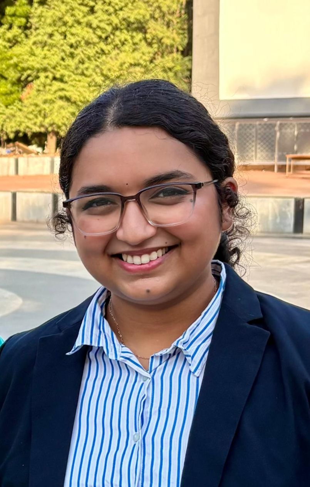

// IIT Madras · Autonomous Systems Lab
Dual Degree (B.Tech + M.Tech) in Mechanical Engineering & Robotics
Legged Locomotion · Control Systems · Embedded Hardware
I build robots that move reliably in the real world. My research spans trajectory planning, series elastic actuation, terrain-adaptive locomotion, and safe control using Control Barrier Functions — from simulation all the way to physical hardware validation.

01 / About
I'm a final-year Dual Degree student at IIT Madras (CGPA: 9.01/10), specialising in Robotics. My research is rooted in the intersection of mechanical design, dynamics, and real-time control — with a particular focus on legged robots that can handle the unpredictability of real terrain.
My thesis project involves designing, building, and controlling a two-link quadruped leg using a novel Rotary Series Elastic Actuator (RSEA). I work across the full stack — from CoppeliaSim simulations and Jacobian-based control to ESP32/ODrive firmware and encoder signal processing.
Beyond legged robots, I've worked on cable-driven underwater manipulators (with Oceaneering, USA), smart compression garments, and autonomous afforestation drones. I also enjoy teaching — I served as TA for IIT Madras's first-ever Robot Control course.
Outside the lab: fine arts (acrylic painting, national-level accolades), robotics workshop trainer at Shaastra, and founder of CFI's Sponsorship & Industrial Relations team.
02 / Skills
Programming Languages
Robotics & Simulation
CAD & Design
Control & Theory
Embedded & Hardware
Research Skills
03 / Education
2021 — 2026 (Expected)
Indian Institute of Technology Madras
B.Tech (Hons.) in Mechanical Engineering + M.Tech in Robotics
CGPA: 9.01 / 10 · MCM Scholarship Recipient
2021
Christ Nagar Senior Secondary School, Thiruvallam
Class XII · CBSE
99.2% · JEE Advanced AIR 3991 · Top 0.5% JEE Mains
2019
Indian School Al Seeb, Muscat, Oman
Class X · CBSE
99% · 1st Rank in Oman · 2nd Rank in Gulf (14M students)
04 / Research
Thesis · May 2025 – Present
Built a 2-DOF quadruped leg prototype with a Rotary Series Elastic Actuator. Developed a complete dynamics + control framework in CoppeliaSim and validated joint-space PD control on physical hardware (ESP32 + ODrive).
View project →Industry Collab · Oct 2024 – Present
Collaborated with Oceaneering (Houston, USA) to design a cable-driven underwater manipulator with optimised pulley routing. Implemented gravity-compensated PID and optimal control strategies validated in dynamic simulation.
View project →Course Project · Jan 2026 – Present
Developed a spatially-shifted Control Barrier Function framework using a single CLF and translational symmetry. Real-time CBF-QP optimisation at 30 ms on a 10-state quadrotor model.
View project →Research · May 2023 – Mar 2024
Integrated force-resistive sensors into a compression garment for real-time pressure monitoring in paraplegic individuals. Built a closed-loop feedback controller to prevent pressure sores.
View project →Patent · May 2022 – Apr 2023
Designed and fabricated a lightweight robotic arm integrated with a hexacopter for autonomous soil analysis and seed sowing. Resulted in Patent No. 549953.
View project →05 / Achievements
1st rank in Oman & 2nd rank in Gulf in CBSE Class X (out of 14 million students)
Top 0.5% in JEE Mains 2021; AIR 3991 in JEE Advanced 2021
MCM Scholarship at IIT Madras for outstanding academic performance
Patent granted (No. 549953) for Mass Afforestation Drone design
4th place in National Robotics Challenge, Unacademy (~100 teams)
Shastra Prathibha winner for two consecutive years (2017, 2018)
Reduced detergent manufacturing utility costs by 30% at Procter & Gamble internship (₹30M annual savings)
Professionally trained in Fine Arts since 2010; national accolades in sustainability poster making
06 / Contact
Open to research collaborations, PhD opportunities, and interesting robotics problems.